BLOG & SOUNDS
music, πειραματικά, suggestions...
about
articles
articles
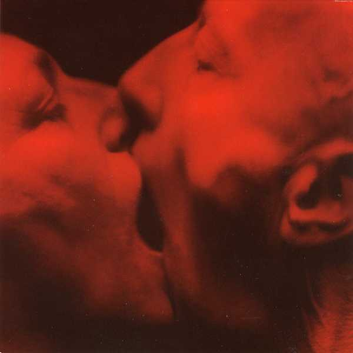
Von Magnet - De L'Aimant
Electroflamenco. Ritual, industrial, theatrical songs and compositions.
Dec 31, 2013
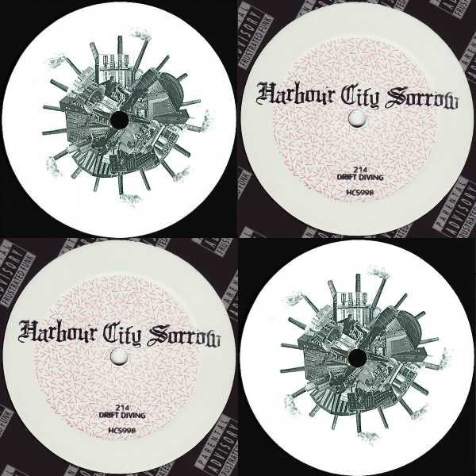
Metropolis - Guardian Of The Heartmachine EP
+ 214 - Drift Diving EP
Two electro- techno EPs that will satisfy the paranoiawkward dark listener/dancer.
Dec 16, 2013
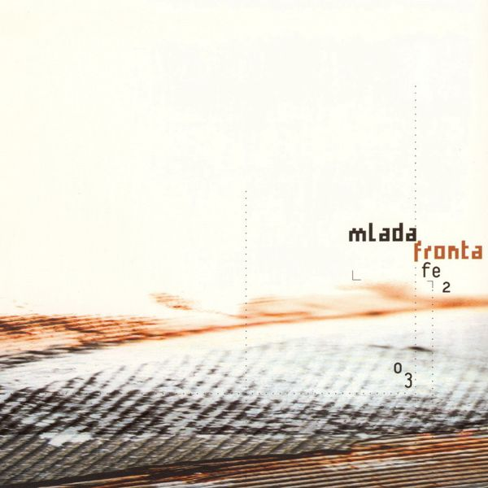
Mlada Fronta - Fe
2
O
3
Μinimal evolving soundscapes and melodies accompanied usually with rhythmic noise, break beats and great industrial dance mechanics.
Nov 29, 2013
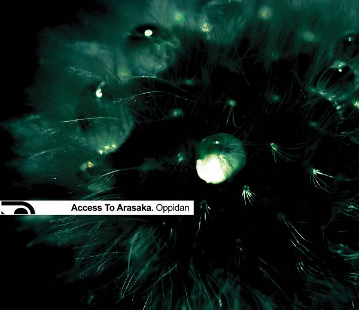
Access To Arasaka - Oppidan
Slow-tempo, dubstly bass, beautiful melodies and atmospheres, strange mechanics with fast-paced industrial cuts, designed carefully and delivered strong
Nov 13, 2013
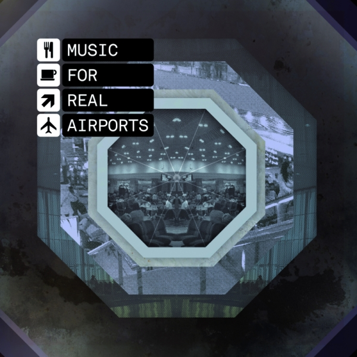
The Black Dog - Music For Real Airports
An ambient album with compositions strong with emotion sometimes positive and sometimes dark. Rhythm and beat accompany many arrangements and each track has a certain place in the wholeness of this concept album
Oct 31, 2013
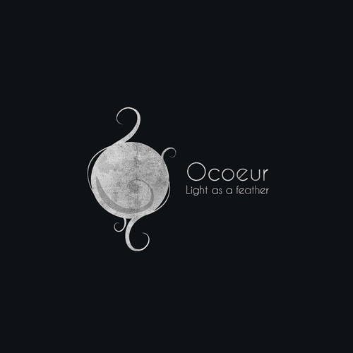
Ocoeur - Light As A Feather
Compositions that crosses techno, electro-acoustic, down-tempo and impose the IDM veil over the album also manage to deviate from it.
Oct 17, 2013
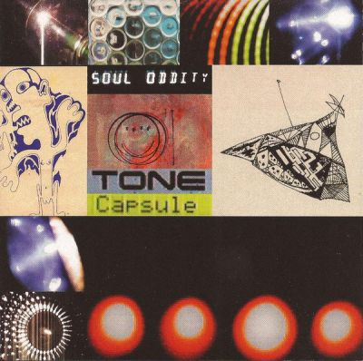
Soul Oddity - Tone Capsule
Experimental electro - techno from the deep 90s ( apparently). We have rhythmic challenges with analogue and monotone (mostly) bubbles and bleeps creatively mixing together.
Oct 2, 2013
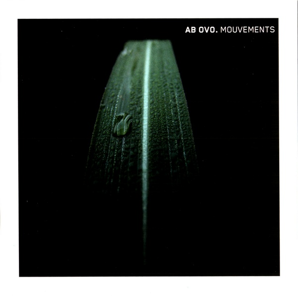
Ab Ovo - Mouvements
Soundscapes and power (a little soft) rhythms, medolic-utted sequences with a down-tempo (ish) feel.
Sept 16, 2013
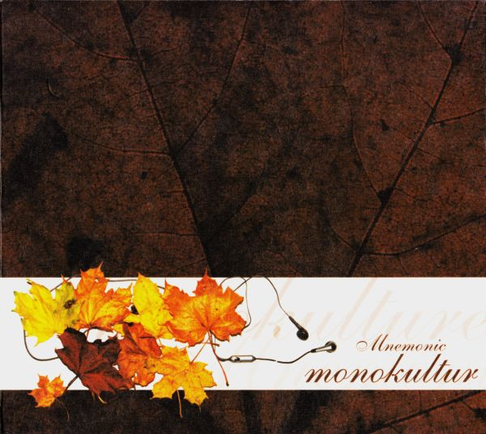
Mnemonic - Monokultur
melodic keyboard dominate most tracks' structure and hard and complex beats build impressive rhythms. a dark, heavy yet emotional sound
Aug 29, 2013
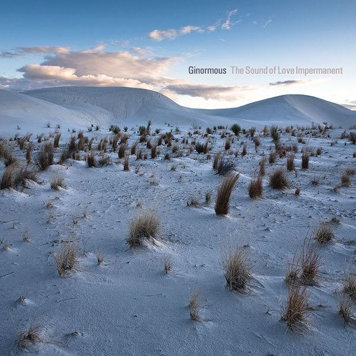
Ginormous - the sound of love impermanent
an ambient mainly album covering modern classical and "idm" aspects that becomes lively enough to slightly bend the field of electronica
Aug 5, 2013
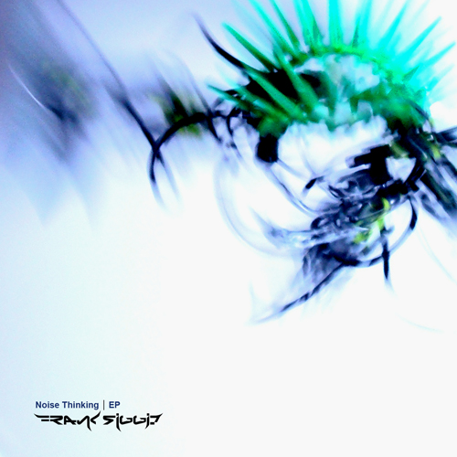
Frank Riggio - Noise Thinking EP
Breakbeat rhythm alongside creative use of samples. "Noise thinking" gets into a dark and aggressive theme all the way out
Aug 3, 2013
Beefcake - Drei
Ill, trip hop, break, experimental idm and orchestral stuff forging of beautiful compositions
Aug 1, 2013
↑


 No Rights Reserved
No Rights Reserved